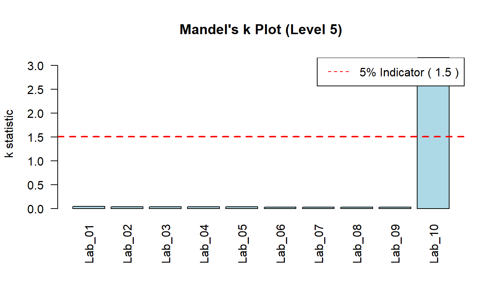

library(ringtest)
# Read sample CSV data
ringtest <- read.csv(
here::here("inst/extdata/ringtest_data.csv"), stringsAsFactors = FALSE)
head(ringtest)
#> lab level replicate value
#> 1 Lab_01 Level_1 1 10.12
#> 2 Lab_01 Level_1 2 10.08
#> 3 Lab_01 Level_1 3 10.15
#> 4 Lab_01 Level_1 4 10.11
#> 5 Lab_01 Level_1 5 10.14
#> 6 Lab_01 Level_2 1 20.25Vignette Title
Introduction
The ringtest package implements the statistical workflow outlined in ISO 5725-2:2025 (Accuracy (trueness and precision) of measurement methods and results — Part 2: Basic method for the determination of repeatability and reproducibility of a standard measurement method).
This vignette demonstrates how to: 1. Load interlaboratory (ring test) data. 2. Compute basic cell statistics (means, standard deviations) and Mandel’s consistency statistics (\(h\) and \(k\)). 3. Perform numerical outlier detection using Cochran’s and Grubbs’ tests. 4. Estimate level-specific repeatability (\(s_r\)) and reproducibility (\(s_R\)) standard deviations. 5. Fit functional relationships between precision components and mean level (\(m\)).
1. Loading Sample Ring Test Data
We load a dataset consisting of \(p = 10\) laboratories measuring \(q = 5\) items/levels with \(n = 5\) replicates per laboratory-level cell.
2. Calculating Cell Statistics and Mandel’s \(h\) & \(k\)
Next, we calculate cell means (\(\bar{y}_{ij}\)), within-cell standard deviations (\(s_{ij}\)), and Mandel’s consistency statistics (\(h\) and \(k\)).
cell_stats <- calc_cell_stats(ringtest)
cell_stats <- calc_mandel_hk(cell_stats)
head(cell_stats)
#> lab level n mean sd h k
#> 1 Lab_01 Level_1 5 10.120 0.02738613 0.28434398 1.2500000
#> 2 Lab_02 Level_1 5 10.050 0.02236068 -1.29534478 1.0206207
#> 3 Lab_03 Level_1 5 10.190 0.02236068 1.86403274 1.0206207
#> 4 Lab_04 Level_1 5 10.090 0.01581139 -0.39266549 0.7216878
#> 5 Lab_05 Level_1 5 10.128 0.01923538 0.46487984 0.8779711
#> 6 Lab_06 Level_1 5 10.106 0.02073644 -0.03159378 0.9464847Visualizing Mandel’s \(h\) and \(k\) Indicators
Mandel’s \(h\) statistic highlights between-laboratory consistency, while Mandel’s \(k\) statistic highlights within-laboratory variability.
# Critical indicator lines for p=10, n=5 at alpha=0.05
h_ind <- mandel_h_indicator(p = 10, alpha = 0.05)
k_ind <- mandel_k_indicator(p = 10, n = 5, alpha = 0.05)
# Plot Mandel's k for Level 5
lvl5_k <- cell_stats[cell_stats$level == "Level_5", ]
barplot(lvl5_k$k, names.arg = lvl5_k$lab, main = "Mandel's k Plot (Level 5)",
ylab = "k statistic", col = "lightblue", las = 2)
abline(h = k_ind, col = "red", lty = 2, lwd = 2)
legend("topright", legend = paste("5% Indicator (", round(k_ind, 2), ")"), col = "red", lty = 2)
Notice that Lab_10 exhibits a strong spike in \(k\) at Level 5.
3. Screening Outliers Level-by-Level
ISO 5725-2 specifies Cochran’s test for variance heterogeneity and Grubbs’ tests (single and double) for outlying means.
# Screening Level_2 (contains high mean outlier at Lab_08)
lvl2_stats <- cell_stats[cell_stats$level == "Level_2", ]
grubbs_lvl2 <- test_grubbs_single(lvl2_stats)
cat("Grubbs Test (Level 2):\n")
#> Grubbs Test (Level 2):
cat("Suspect Lab :", grubbs_lvl2$suspect_lab, "\n")
#> Suspect Lab : Lab_08
cat("Statistic :", round(grubbs_lvl2$statistic, 4), "\n")
#> Statistic : 2.6898
cat("1% Critical :", round(grubbs_lvl2$crit_1, 4), "\n")
#> 1% Critical : 2.4821
cat("Status :", grubbs_lvl2$status, "\n\n")
#> Status : Outlier (**)
# Screening Level_5 (contains high variance outlier at Lab_10)
lvl5_stats <- cell_stats[cell_stats$level == "Level_5", ]
cochran_lvl5 <- test_cochran(lvl5_stats)
cat("Cochran Test (Level 5):\n")
#> Cochran Test (Level 5):
cat("Suspect Lab :", cochran_lvl5$suspect_lab, "\n")
#> Suspect Lab : Lab_10
cat("Statistic :", round(cochran_lvl5$statistic, 4), "\n")
#> Statistic : 0.999
cat("1% Critical :", round(cochran_lvl5$crit_1, 4), "\n")
#> 1% Critical : 0.0025
cat("Status :", cochran_lvl5$status, "\n")
#> Status : Outlier (**)4. Estimating Precision Parameters (\(s_r\) and \(s_R\))
After eliminating confirmed statistical outliers (**), we compute the general mean (\(\hat{m}_j\)), repeatability standard deviation (\(s_{rj}\)), between-laboratory standard deviation (\(s_{Lj}\)), and reproducibility standard deviation (\(s_{Rj}\)).
# Clean outliers
clean_stats <- cell_stats
clean_stats$mean[clean_stats$level == "Level_2" & clean_stats$lab == "Lab_08"] <- NA
clean_stats$sd[clean_stats$level == "Level_2" & clean_stats$lab == "Lab_08"] <- NA
clean_stats$sd[clean_stats$level == "Level_5" & clean_stats$lab == "Lab_10"] <- NA
# Calculate precision metrics per level
levels <- unique(clean_stats$level)
precision_results <- do.call(rbind, lapply(levels, function(lvl) {
sub <- clean_stats[clean_stats$level == lvl, ]
res <- calc_iso_variances(sub)
res$level <- lvl
res
}))
print(precision_results[, c("level", "p", "m_hat", "s_r", "s_L", "s_R")])
#> level p m_hat s_r s_L s_R
#> 1 Level_1 10 10.10740 0.02190890 0.04321574 0.04845204
#> 2 Level_2 9 20.22844 0.02507766 0.06980688 0.07417472
#> 3 Level_3 10 30.38040 0.02722132 0.12336783 0.12633536
#> 4 Level_4 10 40.50000 0.02807134 0.15250413 0.15506615
#> 5 Level_5 10 50.63540 0.02725803 0.20361374 0.205430175. Fitting Functional Relationships \(s = f(m)\)
When precision parameters depend on the mean level \(m\), ISO 5725-2 recommends fitting functional relationships (Relationships I, II, III, or IV).
# Fit Relationship I: s_r = b * m
model_sr <- fit_precision_relationship(precision_results$m_hat, precision_results$s_r, rel = "I")
# Fit Relationship II: s_R = a + b * m
model_sR <- fit_precision_relationship(precision_results$m_hat, precision_results$s_R, rel = "II")
cat("Repeatability Model :", model_sr$formula, "\n")
#> Repeatability Model : s = b * m
cat("Slope (b) :", round(model_sr$params["b"], 5), "\n\n")
#> Slope (b) : 0.00111
cat("Reproducibility Model :", model_sR$formula, "\n")
#> Reproducibility Model : s = a + b * m
cat("Intercept (a) :", round(model_sR$params["a"], 5), "\n")
#> Intercept (a) : 0.00939
cat("Slope (b) :", round(model_sR$params["b"], 5), "\n")
#> Slope (b) : 0.003686. Full Automated ISO Workflow
All steps above can be executed in a single automated pipeline using run_iso5725_analysis():
full_analysis <- run_iso5725_analysis(ringtest)
Summary table of level precision
full_analysis$level_precision